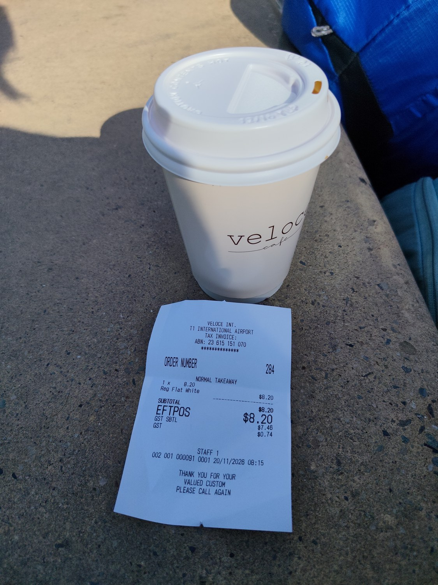

Ans andere Ende der Welt – und schon beim ersten Kaffee die erste Überraschung. Keine Sehenswürdigkeiten, keine Tipps: nur Dinge, die mir in Australien auffielen und eine neugierige Frage auslösten, der ich dann nachgegangen bin. Den Anfang macht das Getränk, das man hier zum Ankommen trinkt: der Flat White. ☕
Wer hat eigentlich den Flat White erfunden – und warum ist er in Australien heilig?

Mein erster Flat White auf heimischem Boden – zum Ankommen in Sydney. ☕
Nach all den Wochen mit balinesischem Kopi war mein erster Wunsch in Australien ein ganz bestimmter: ein richtiger Flat White. Hier, auf seinem Heimatboden, bekommt dieses schlichte Getränk fast etwas Feierliches – und als ich ihn in Sydney vor mir stehen hatte, fragte ich mich: Was genau ist das eigentlich, und warum nehmen die Australier ihren Kaffee so bitterernst?
Zunächst das Handwerkliche: Ein Flat White ist ein Espresso mit heißer, samtig aufgeschäumter Milch – aber eben flach („flat"), ohne die dicke, trockene Schaumhaube des Cappuccino. Die Milch wird nur zu einer dünnen, glänzenden Schicht „Mikroschaum" gezogen und mit dem Espresso verwoben. Er ist kleiner und kräftiger als ein Latte, intensiver als ein Cappuccino: mehr Kaffee, weniger Schaum. Kurz – ein Getränk für Menschen, die den Espresso schmecken wollen, aber nicht ganz pur.
Und jetzt wird's spannend: Wer ihn erfunden hat, darüber streiten sich bis heute zwei Länder. 🇦🇺🇳🇿 Australien verweist auf handfeste Belege – schon 1983 taucht der Begriff in einer Café-Kritik in Sydney auf, und der Café-Besitzer Alan Preston setzte „Flat White" 1985 offiziell auf die Karte seiner Moors Espresso Bar in Sydney. Neuseeland hält dagegen: Dort erzählt man sich, der Barista Fraser McInnes habe das Wort Ende der 1980er in Wellington geprägt – als ihm ein Cappuccino misslang und der Schaum einfach „flach" blieb, nannte er das Ergebnis kurzerhand „flat white". Die Papierlage spricht eher für Australien und die frühen Achtziger, entschieden ist der Streit bis heute nicht – ein echtes Trans-Tasman-Duell, das beide Seiten mit Inbrunst pflegen.
Dahinter steckt aber eine viel ältere Geschichte – und die erklärt, warum Kaffee hier fast eine Art Religion ist. Nach dem Zweiten Weltkrieg kamen Hunderttausende Einwanderer aus Italien und Griechenland nach Australien – und mit ihnen die Espressomaschinen. Sie brachten die südeuropäische Kaffeehaus-Kultur mit, und aus den kleinen Espresso-Bars der Migranten wuchs über die Jahrzehnte eine der anspruchsvollsten Kaffeeszenen der Welt. Bis heute gilt: In Australien geht man nicht zur Kette, sondern zu seinem Café um die Ecke, wo ein Barista den Kaffee mit echtem Stolz zubereitet.
Wie ernst das ist, bekam ausgerechnet der größte Kaffeekonzern der Welt zu spüren. Starbucks eröffnete im Jahr 2000 in Australien, expandierte rasant auf über achtzig Filialen – und scheiterte spektakulär. 2008 musste die Kette den Großteil ihrer australischen Läden wieder schließen. Der Grund: Die Australier hatten längst ihre eigene, bessere Kaffeekultur. Die süßen Milchgetränke im Pappbecher, das immergleiche Ketten-Konzept – das brauchte hier niemand. Einer der seltenen Orte der Welt, an dem der Riese gegen die kleinen Cafés verlor. ☕
Die schönste Pointe kommt zum Schluss: Ausgerechnet Starbucks setzte den Flat White Jahre später – ab etwa 2010 – in Großbritannien und bald darauf in den USA auf die Karte und machte das australisch-neuseeländische Getränk damit weltberühmt. Der Riese hatte den Kampf in Australien verloren und trug das Lieblingsgetränk seiner Bezwinger anschließend rund um den Globus.
Und so hatte mein erster Flat White in Sydney tatsächlich etwas Zeremonielles: ein winziges, unscheinbares Getränk, über das zwei Länder streiten, hinter dem eine ganze Einwanderungsgeschichte steht – und das einen Weltkonzern in die Knie gezwungen hat. Ich habe ihn langsam getrunken und an unseren Kaffeetisch gedacht. Von Kopi zu Flat White – das Kaffee-Kapitel reist einfach weiter. 💛
Ein schlichter Milchkaffee, über den sich zwei Länder streiten, hinter dem eine ganze Einwanderungswelle steht – und vor dem sogar Starbucks kapitulieren musste. Wer hätte das gedacht?
🌅 Wo der Tag beginnt
Wer hat eigentlich bestimmt, dass in Australien die Sonne zuerst aufgeht?
Wer sieht den neuen Tag zuerst? Der Vorsprung zur Weltzeit (UTC):
+14🇰🇮 Kiribati die vorderste Zeitzone der Welt
+13🇳🇿 Neuseeland (Südsommer)
+11🇦🇺 Sydney (Südsommer)
In Australien hört man es mit einem gewissen Stolz: Hier ist man „der Welt einen Schritt voraus". Sydney feiert als eine der ersten Großstädte ins neue Jahr, und die Sonne des neuen Tages scheint hier früher als fast überall sonst. Da fragte ich mich, ganz gegen die Anonymen Deutisten: Wer hat das eigentlich so bestimmt – dass der Tag ausgerechnet hier beginnt? 😄
Die Antwort beginnt überraschend weit weg von Australien, nämlich in Washington, D.C., im Oktober 1884. Lange hatte jede Stadt ihre eigene Zeit: Mittag war, wenn die Sonne am höchsten stand – in jedem Ort ein paar Minuten anders. Für Eisenbahnen und Schiffe war das ein heilloses Durcheinander. Also trafen sich Vertreter aus 25 Nationen zur „Internationalen Meridiankonferenz" und stimmten – mit 22 zu 1 Stimmen, bei zwei Enthaltungen – dafür, eine einzige Linie zur Null zu erklären: den Meridian, der durch die Sternwarte von Greenwich bei London läuft. Der Hauptgrund war ganz praktisch: Die meisten Seekarten der Welt rechneten ohnehin schon von Greenwich aus.
Nicht alle waren begeistert. Frankreich fand, eine neutrale Linie wäre gerechter gewesen (am liebsten eine durch Paris 😉), enthielt sich der Stimme und hielt noch jahrzehntelang am Pariser Meridian fest. Erst 1911 übernahm es die Greenwich-Zeit – im Gesetzestext peinlich darauf bedacht, das Wort „Greenwich" kein einziges Mal auszusprechen.
Und jetzt kommt Australien ins Spiel – ganz ohne eigenes Zutun. Denn wenn Greenwich die Null ist, dann liegt genau gegenüber, auf der anderen Seite der Erdkugel bei 180 Grad, die Linie, an der das Datum umspringt: die Internationale Datumsgrenze. Die hat die Konferenz gar nicht eigens festgelegt – sie ergab sich von selbst. Und durch einen glücklichen Zufall verläuft diese Linie fast nur durch offenen Pazifik, gleich neben Australien und Neuseeland. Dort, am westlichen Rand der Linie, wird jeder neue Tag zuerst geboren. Niemand hat „Australien" gewählt – es saß nur zufällig an der richtigen Stelle.
Die schönste Pointe aber ist: Australien ist gar nicht Erster. 🙈 Den allerersten Sonnenaufgang des neuen Tages erleben winzige Inseln noch ein Stück weiter östlich – allen voran Kiribati und Neuseeland. Und Kiribati hat sich diesen Titel sogar selbst zurechtgebogen: Weil die Datumsgrenze mitten durch das Inselreich lief und im Land zwei verschiedene Wochentage galten, verschob die Regierung 1995 die Linie kurzerhand um das ganze Land herum nach Osten. Seither liegen Kiribatis östlichste Inseln auf UTC+14 – der am weitesten „vorgestellten" Uhrzeit der Erde. Prompt konnte die kleine Caroline-Insel (flugs in „Millennium-Insel" umbenannt) für sich beanspruchen, als erstes Land überhaupt die Sonne des Jahres 2000 zu sehen.
Dahinter steckt also keine Laune der Natur, sondern eine Reihe sehr menschlicher Entscheidungen: ein Komitee von 1884, eine unsichtbare Linie im Meer – und Länder, die diese Linie bis heute mal hierhin, mal dorthin zupfen, nur um die Ersten zu sein. Die Zeit, so lerne ich, ist am Ende verhandelbar. Und für mich im australischen Frühsommer heißt das ganz praktisch: Während ihr in Europa noch schlaft, habe ich das Morgen hier längst in der Tasse. ☕
Niemand hat bestimmt, dass in Australien die Sonne zuerst aufgeht – es ist der Nebeneffekt einer Konferenz von 1884 und einer Linie im leeren Pazifik. Und streng genommen stimmt es nicht einmal: Die Ersten sind ein paar winzige Inseln, von denen eine sich den Titel sogar selbst zurechtgerückt hat. Wer hätte das gedacht?